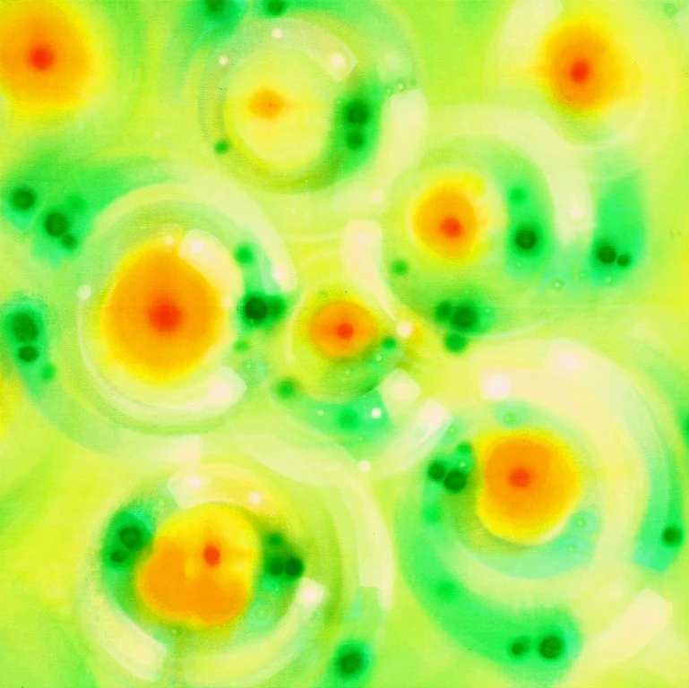

Im Gehen Nr. 15
- Werktitel
- Im Gehen Nr. 15
- Jahr
- wird noch bestätigt
- Maße
- 66 × 66 cm
- Medium
- Acrylfarbe
Bildbeschreibung (nach dem sichtbaren Bild, keine Aussage des Malers)
Auf gelbgrünem Grund verteilen sich mehrere konzentrische Kreise mit orangegelben und orangeroten Mittelpunkten. Um die Kreise liegen kleine dunkelgrüne Punkte.